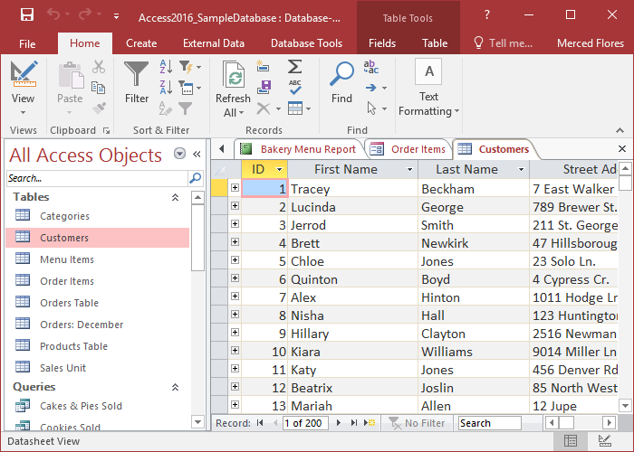

Microsoft Access
Es importante comenzar por el principio y explicar qué es Microsoft Access, uno de los programas ofimáticos de Microsoft que, pese a no ser tan conocido como otros, es uno de los más útiles en el sector empresarial.
Microsoft Access es una herramienta diseñada para crear, gestionar y administrar las bases de datos. Además, este programa se encarga de facilitar el trabajo de las empresas, especialmente cuando manejan grandes cantidades de datos y registros.
El funcionamiento de Microsoft Access es sencillo de comprender, pues a través de fórmulas especiales se realizan cálculos, pero no es todo, ya que esta herramienta también juega un papel importante en el análisis de datos.
Definitivamente, esta es una herramienta que ofrece muchas posibilidades y ventajas para las empresas, especialmente en lo relacionado a la optimización y eficiencia de trabajo, pudiendo gestionar, administrar, manejar, recopilar y almacenar los datos de forma mucho más fácil y rápida.

Historia
- Orígenes y lanzamiento: Microsoft Access fue lanzado por primera vez en noviembre de 1992. Fue parte de la suite Microsoft Office, pero inicialmente se vendió por separado. En sus inicios, Access fue desarrollado para ser una herramienta de gestión de bases de datos de nivel de entrada, diseñada para ser más accesible para los usuarios sin experiencia en programación o bases de datos complejas.
- Evolución temprana: En sus primeras versiones, Access permitía a los usuarios crear y gestionar bases de datos utilizando una interfaz gráfica de usuario (GUI) intuitiva. Ofrecía características como formularios, consultas y reportes, lo que facilitaba la creación y manipulación de datos sin necesidad de escribir código SQL.
- Integración con Microsoft Office: Con el tiempo, Access se integró más estrechamente con otras aplicaciones de Microsoft Office, lo que facilitó la importación y exportación de datos entre programas como Excel y Word. Esto amplió su utilidad y lo convirtió en una herramienta valiosa para empresas y usuarios individuales.
- Versiones posteriores: A lo largo de los años, Microsoft lanzó varias versiones de Access, cada una con mejoras en rendimiento, funcionalidad y compatibilidad. Con el tiempo, Access se convirtió en una herramienta más potente, capaz de manejar bases de datos más grandes y complejas, y ofreciendo características avanzadas como macros, módulos de código VBA (Visual Basic for Applications) y la capacidad de crear aplicaciones web.
- Desarrollos recientes: En versiones más recientes, Microsoft Access ha seguido evolucionando para adaptarse a las cambiantes necesidades del mercado y las tecnologías emergentes. Se ha centrado en mejorar la integración con servicios en la nube como Microsoft Azure, así como en ofrecer capacidades de desarrollo de aplicaciones web más avanzadas.
- Uso actual: Hoy en día, Microsoft Access sigue siendo ampliamente utilizado en entornos empresariales y por usuarios individuales para crear y gestionar bases de datos. Aunque ha surgido una competencia considerable en el campo de las bases de datos, Access sigue siendo una opción popular debido a su familiaridad, integración con otras aplicaciones de Microsoft y su relativa facilidad de uso.